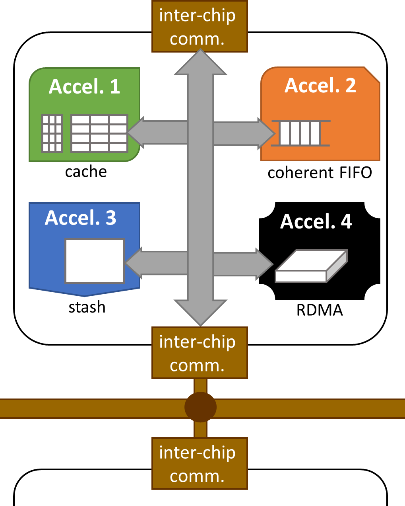
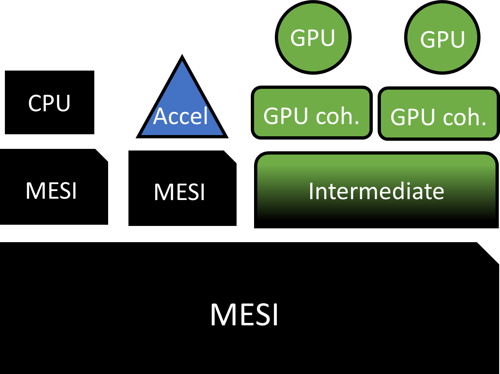

In nearly all compute domains, architectures are increasingly relying on parallelism and hardware specialization to exceed the limits of single core performance. GPUs, FPGAs, and other specialized devices are being incorporated into everything from mobile devices to supercomputers to data centers, offering new challenges and opportunities to both hardware and software designers.
One of the biggest challenges in this area is efficient data movement. Growth in compute throughput has far exceeded that of memory throughput in specialized devices, while Amdahl's Law has motivated a push to deliver efficiency gains for workloads with irregular sharing and fine-grain synchronization.
Conventional heterogeneous programming paradigms which offload coarse-grain tasks to accelerators and require communication through memory (or worse, explicit off-chip data transfer) cannot meet these new requirements.
Technologies like the AMD APU, ARM AXI Coherency Extensions, IBM CAPI, and CUDA Unified Memory represent a recent trend toward more tightly integrated heterogeneous systems.

Scalable heterogeneous compute architecture
This project focuses on developing architectures and programming interfaces which can flexibly, efficiently, and simply accommodate these rapidly evolving memory demands.
Our cross-layer research includes innovations in coherence protocols and consistency models for heterogeneous systems, novel coherent storage structures for specialized devices, hardware and software scheduling strategies for emerging GPU workloads, and innovations to enable coherent data movement and automatic generation of efficient compute designs in configurable hardware (e.g., FPGAs).
Heterogeneous Coherence and Consistency
One of the main goals of this project is to offer improved coherence and consistency for emerging heterogeneous systems.
Past efforts to improve efficiency for emerging GPU workloads tend to add complexity to the programming model through the use of non-coherent scratchpads, scoped synchronization, and relaxed atomics. Each of these methods trades efficiency for reduced programmability and limited usability.
Our recent work has shown that it is possible to achieve high GPU cache efficiency without burdening the programmer with added complexity. The coherent stash architecture offers the efficiency benefits of a directly addressed scratchpad while also offering the programmability and global addressability of a coherent cache (ISCA 2015).
We have proposed and evaluated the use of the DeNovo coherence protocol for GPU caches (MICRO 2015), and found that high cache reuse is possible in the presence of frequent synchronization without relying on scoped synchronization.
Finally, we have defined DRF-Relaxed (ISCA 2017), which formalizes safe use cases of atomic relaxation and offers simple SC-centric semantics for programs which use them.
Current work in this project focuses on the challenge of integrating diverse coherence strategies in a tightly coupled heterogeneous system. Earlier efforts to implement coherence between heterogeneous devices tend to rely on a last level MESI cache interface. However, a MESI interface is inappropriate for the memory demands of many specialized workloads, and often these architectures rely on a hierarchical cache structure with an intermediate cache level to translate and coalesce requests from caches which prefer a different protocol.
This restricts the sharing patterns that can execute efficiently, adding hierarchical indirection and MESI coherence overheads to any communication between different device types.

Hierarchical MESI-based LLC
Instead of a hierarchical MESI-based cache structure, we propose a flexible and efficient interface which is based on the DeNovo protocol. DeNovo has been shown to offer improved simplicity, scalability, and efficiency for CPU and GPU workloads, and we extend it to offer support for both self-invalidated reads and writer initiated reads, write-through and write-back caches, and requests of variable granularity. This unified strategy avoids the need for hierarchical indirection while allowing each attached device to choose request types which best fit their own memory demands.